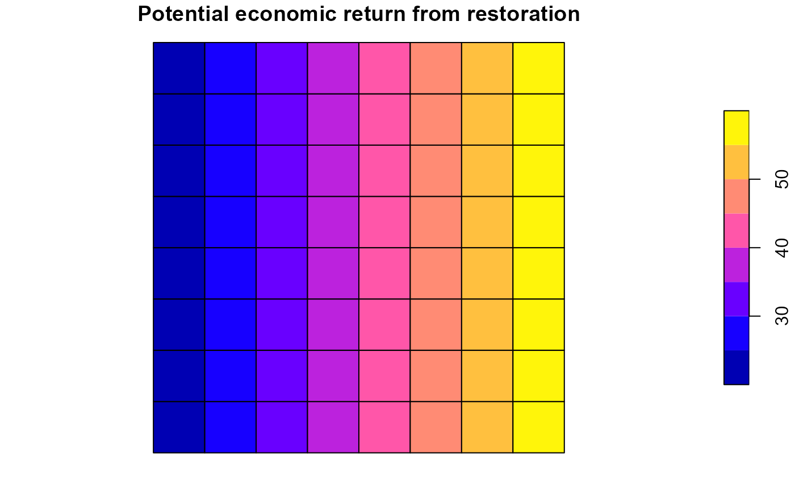

Assign economic returns to feasible planning-unit–action pairs. Returns may be positive, zero, or negative and are stored separately from implementation costs and ecological effects.
Arguments
- x
A
Problemobject created withcreate_problem. It must already contain feasible actions and an action catalogue; runadd_actionsfirst.- profit
Profit specification. One of:
NULL: profit is set to 0 for all feasible(pu, action)pairs,a numeric scalar: recycled to all feasible pairs,
a named numeric vector: names are action ids and values define action-level profit,
a
data.frame(action, profit)defining action-level profit,a
data.frame(pu, action, profit)defining pair-specific profit.
Profit can be defined only once per problem, including explicit zero profit. A second call raises an error. To compare profit scenarios, build separate problems from the object before profit was added.
Value
An updated Problem object with a stored profit table created.
The stored table contains columns pu, action,
profit, internal_pu, and internal_action, and
includes only rows with non-zero profit.
Details
Economic returns and implementation costs
An economic return \(\pi_{ia}\) is the monetary contribution associated with selecting action \(a\) in planning unit \(i\). Positive values represent gains or revenues; negative values represent penalties or economic losses. A zero value contributes no profit.
Profit is registered independently of planning-unit and action costs.
add_objective_max_profit() maximises the sum of registered returns,
whereas add_objective_max_net_profit() can subtract implementation
costs. If your profit inputs already account for these costs, avoid
subtracting them again when configuring the objective. Economic returns
should not be confused with the signed ecological changes registered
using add_effects().
Supported input formats
The profit argument accepts:
NULL: zero profit for all feasible pairs;one numeric value: the same profit for every feasible pair;
a named numeric vector: one profit value per named action;
data.frame(action, profit): one profit value per action;data.frame(pu, action, profit): values specific to individual planning-unit–action pairs.
An action-level value applies to all feasible planning units for that action. A pair-specific table permits spatially varying returns. Feasible pairs not specified in the input receive profit zero.
Storage and use in planning
Only non-zero values are stored in dist_profit. Zero-profit pairs
are omitted from the table but remain feasible. The stored columns are
pu, action, profit, internal_pu, and
internal_action. Calling add_profit() neither selects actions
nor modifies feasible actions or ecological effects; the values are used
later by objectives, constraints, and solution summaries.
Profit can be defined only once per problem, including when supplying
NULL. To compare economic scenarios, start from the same problem
before profit was added.
Examples
# EXAMPLE 1: Create a planning problem with feasible actions
# The bundled 64-unit landscape has protection and restoration
# alternatives. Action implementation costs are registered separately
# from the economic returns introduced below.
sim <- load_sim_multiaction()
p <- create_problem(
pu = sim$planning_units,
features = sim$features,
dist_features = sim$dist_features,
cost = "cost"
) |>
add_actions(
actions = sim$actions,
cost = sim$action_costs
)
# EXAMPLE 2: A constant economic return
# Suppose implementing any feasible action generates 10 monetary units,
# regardless of the action or its location. A scalar is applied to all
# feasible planning-unit--action pairs.
p_constant <- add_profit(p, profit = 10)
head(p_constant$data$dist_profit[, c("pu", "action", "profit")])
#> pu action profit
#> 1 1 protect 10
#> 65 1 restore 10
#> 2 2 protect 10
#> 66 2 restore 10
#> 3 3 protect 10
#> 67 3 restore 10
# EXAMPLE 3: Action-specific returns
# Protection generates +50 monetary units, whereas restoration incurs
# an economic penalty of -5 units. A named vector assigns a value to
# every feasible planning unit where that action is available.
returns <- c(protect = 50, restore = -5)
p_action <- add_profit(p, profit = returns)
head(p_action$data$dist_profit[, c("pu", "action", "profit")])
#> pu action profit
#> 1 1 protect 50
#> 65 1 restore -5
#> 2 2 protect 50
#> 66 2 restore -5
#> 3 3 protect 50
#> 67 3 restore -5
# The same action-level values can be supplied as a data frame.
# These alternatives start from the same base problem because profit
# can be defined only once per problem.
p_action_table <- add_profit(p, data.frame(
action = c("protect", "restore"),
profit = c(50, -5)
))
head(p_action_table$data$dist_profit[, c("pu", "action", "profit")])
#> pu action profit
#> 1 1 protect 50
#> 2 1 restore -5
#> 3 2 protect 50
#> 4 2 restore -5
#> 5 3 protect 50
#> 6 3 restore -5
# EXAMPLE 4: Location-specific economic returns
# The same action can have different returns across planning units.
# Protection provides +100 in unit 1 and +80 in unit 2; restoration
# provides +30 in unit 3. Unlisted feasible pairs receive zero profit.
local_returns <- data.frame(
pu = c(1, 2, 3),
action = c("protect", "protect", "restore"),
profit = c(100, 80, 30)
)
p_local <- add_profit(p, profit = local_returns)
# Only the three non-zero contributions are stored. This does not
# make any of the other, zero-profit action pairs infeasible.
p_local$data$dist_profit[, c("pu", "action", "profit")]
#> pu action profit
#> 1 1 protect 100
#> 3 2 protect 80
#> 6 3 restore 30
# EXAMPLE 5: Explicitly specify no economic return
# NULL assigns zero to every feasible pair. The resulting sparse
# profit table is empty, even though the actions remain available.
p_zero <- add_profit(p, profit = NULL)
nrow(p_zero$data$dist_profit)
#> [1] 0
# EXAMPLE 6: Map spatially varying potential returns
# The simulated planning units include geometry and an x-coordinate.
# Give restoration a hypothetical return that increases from west to
# east. These are potential returns, not selected management actions.
# No optimiser or solver is needed to visualise the input values.
if (requireNamespace("sf", quietly = TRUE)) {
spatial_returns <- data.frame(
pu = sim$planning_units$id,
action = "restore",
profit = 20 + 5 * sim$planning_units$x
)
p_spatial <- add_profit(p, profit = spatial_returns)
# Attach the registered restoration returns to the geometry.
values <- subset(
p_spatial$data$dist_profit,
action == "restore",
select = c("pu", "profit")
)
mapped <- merge(
sim$planning_units,
values,
by.x = "id", by.y = "pu", all.x = TRUE
)
# This map describes where restoration could generate economic
# returns, not where optimisation has selected restoration.
plot(mapped["profit"],
main = "Potential economic return from restoration")
}
